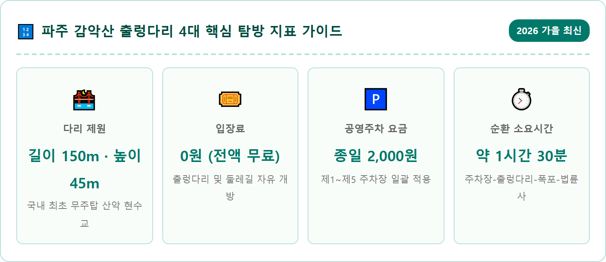
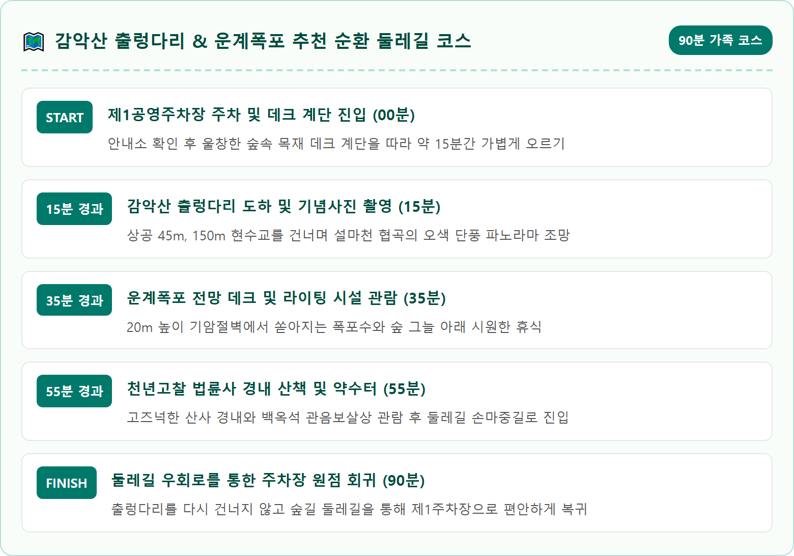
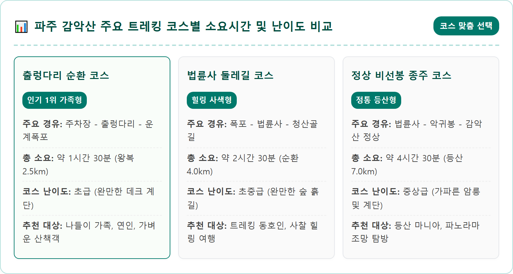
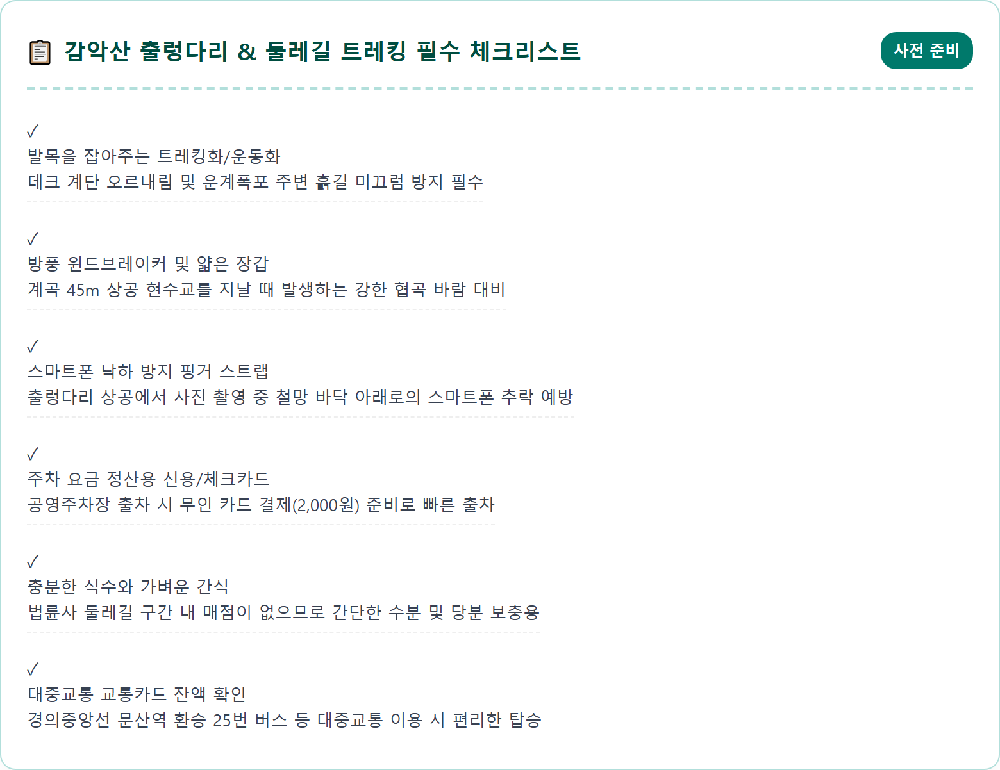
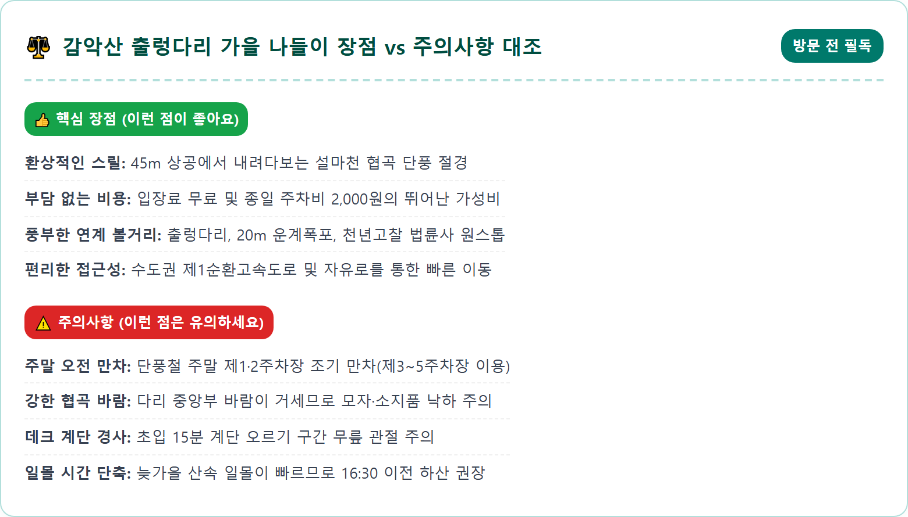
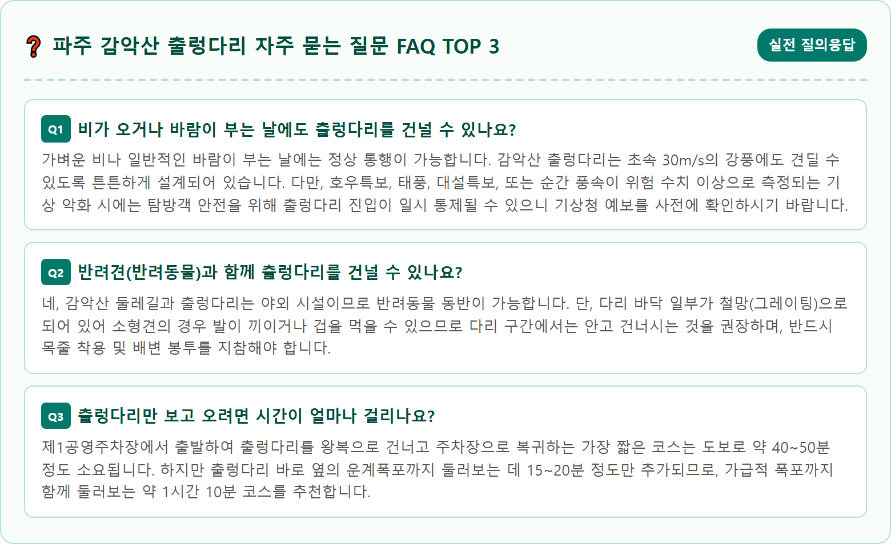

A stunning panoramic view of the Gamaksan Suspension Bridge in Paju, South Korea during late autumn. The long 150-meter red suspension bridge spans gracefully across a deep mountain gorge 45 meters above the valley floor. Both sides of the rugged granite cliff valley are blanketed in fiery red, burnt orange, and deep yellow autumn foliage. Visitors are strolling across the bridge, enjoying the breathtaking scenery. A distant cascading waterfall and traditional temple roof peep through the vibrant autumn canopy. Crisp autumn morning sunlight, photorealistic, 8k resolution, cinematic drone angle, vivid natural colors.

경기도 파주시 적성면과 양주시 남면, 연천군 전곡읍에 걸쳐 우뚝 솟은 감악산(紺岳山, 해발 675m)은 예로부터 경기 5악(감악산·송악산·관악산·화악산·운악산) 중 하나로 꼽혀온 유서 깊은 명산입니다. 바위 사이로 검푸른 빛이 감돈다 하여 이름 붙여진 감악산은 사계절 내내 등산객들의 사랑을 받아왔지만, 특히 2016년 설마천 계곡 상공을 가로지르는 산악 현수교인 '감악산 출렁다리'가 개통되면서 수도권을 대표하는 최고의 힐링 관광지로 확고히 자리매김하였습니다.
감악산 출렁다리는 주탑이 없는 무주탑 산악 현수교 형태로 설계되었으며, 총연장 150m, 보행 폭 1.5m로 계곡 바닥 도로에서 무려 45m 허공에 설치되어 있습니다. 몸무게 70kg 성인 900명이 동시에 통행할 수 있는 견고한 내진 1등급 설계와 풍속 30m/s의 강풍에도 끄떡없는 하이테크 케이블 기술이 적용되어 안전하면서도 기분 좋은 흔들림과 스릴을 동시에 선사합니다.
늦가을 11월에 출렁다리 한가운데에 서면, 깎아지른 설마천 협곡을 따라 불타오르는 붉은 단풍나무와 샛노란 신갈나무, 활엽수들이 파노라마처럼 펼쳐집니다. 발아래로는 아득한 도로와 계곡 물소리가 들려오고, 정면으로는 웅장한 감악산 암봉들이 손에 잡힐 듯 다가와 도심에서 느낄 수 없던 가을 산의 압도적인 스케일을 경험할 수 있습니다.
파주 감악산 출렁다리 주변에는 방문객들의 편의를 위해 제1주차장부터 제5주차장까지 총 5개의 공영주차장이 마련되어 있습니다. 주차 요금은 소형차 기준 종일 2,000원의 매우 저렴한 정액제로 운영되고 있어, 하루 종일 둘레길을 걷거나 인근 맛집을 둘러보아도 주차비 부담이 전혀 없습니다. 하이패스 자동 결제 및 신용카드 무인 정산기가 설치되어 있어 출차 시 대기 시간도 짧습니다.
이 중에서 출렁다리 진입로 데크 계단과 가장 가까운 곳은 '제1공영주차장'과 '제2공영주차장'입니다. 주차 후 횡단보도를 건너면 곧바로 출렁다리로 올라가는 나무 데크길이 시작됩니다. 하지만 가을 단풍철 주말에는 오전 9시 30분이면 제1·제2주차장이 빠르게 만차되는 경향이 있습니다. 이때는 무리하게 진입로에서 대기하지 마시고, 도로를 따라 약 300~500m 아래쪽에 위치한 제3·제4·제5주차장으로 이동하는 것이 훨씬 현명합니다.
제3~제5주차장에서도 출렁다리 진입로까지 계곡을 따라 안전한 목재 보행 데크가 완벽하게 연결되어 있어, 맑은 공기를 마시며 5~10분 정도 걸어 올라오면 무리 없이 출렁다리 입구에 닿을 수 있습니다. 주말 방문 시 주차 스트레스를 줄이고 여유롭게 단풍을 즐기려면 가급적 오전 9시 이전에 도착하는 일정을 추천합니다.

주차장에서 시작되는 완만한 데크 계단을 숨차지 않게 10~15분 정도 걷다 보면 어느새 눈앞에 붉은색 강철 케이블로 엮인 웅장한 출렁다리 입구가 모습을 드러냅니다. 다리 초입에 발을 디디는 순간 허공에 떠 있는 듯한 짜릿한 개방감이 전신을 감싸며 심장을 두근거리게 만듭니다.
감악산 출렁다리는 중심부로 걸어 들어갈수록 보행자의 발걸음과 계곡 바람에 따라 좌우로 살랑살랑 기분 좋은 율동감을 느낄 수 있습니다. 바닥 중간중간에는 아래가 훤히 내려다보이는 철망 구조 그레이팅이 설치되어 있어, 45m 아래 설마천 계곡 도로와 알록달록한 가을 숲의 깊이감을 직접 체감할 수 있습니다. 고소공포증이 약간 있는 분들이라도 양옆으로 튼튼한 와이어 난간이 가슴 높이까지 안전하게 둘러쳐져 있어 난간을 잡고 천천히 걸어가면 무리 없이 건널 수 있습니다.
출렁다리를 건널 때는 모두의 안전을 위한 기본 수칙을 철저히 지켜야 합니다. 다리 난간을 붙잡고 일부러 몸을 세게 흔들거나 뛰는 장난은 절대로 금지되며, 스마트폰으로 사진을 촬영할 때는 손에서 미끄러져 45m 아래로 낙하하지 않도록 스트랩을 걸거나 두 손으로 단단히 쥐어야 합니다. 또한 등산 스틱의 뾰족한 팁은 목재 데크 바닥재를 손상시킬 수 있으므로 고무 패킹을 끼우거나 배낭에 접어 넣고 통행하는 것이 바람직한 에티켓입니다.
출렁다리를 무사히 건너 오른쪽 둘레길 산책로를 따라 5분 남짓 완만한 흙길을 걸어가면, 시원한 물소리와 함께 감악산의 또 다른 명소인 '운계폭포(雲溪瀑布)'가 웅장한 자태를 드러냅니다. 운계폭포는 높이 약 20m에 달하는 거대한 화강암 기암절벽을 타고 하얀 포말을 일으키며 수직으로 낙하하는 자연 폭포로, 감악산 웅장한 산세와 어우러져 절경을 이룹니다.
늦가을 단풍철에는 폭포 절벽 양옆으로 붉은 단풍나무와 담쟁이덩굴이 붉은 융단처럼 둘러싸여 있어, 맑고 투명한 폭포수와 오색 단풍이 빚어내는 풍경이 한 폭의 동양화를 연상시킵니다. 폭포 바로 앞에는 넓은 목재 전망 데크가 설치되어 있어 물안개 섞인 청량한 계곡 바람을 맞으며 기념사진을 남기기에 최적의 포인트입니다.
특히 파주시에서는 운계폭포 암벽을 거대한 스크린 삼아 환상적인 미디어 파사드 쇼인 '운계폭포 라이팅쇼'를 운영하고 있습니다. 어둠이 짙게 깔리는 야간 시간대에 감악산의 전설과 역사, 신비로운 숲의 이야기를 최첨단 프로젝션 맵핑 영상과 웅장한 음악으로 암벽 위에 펼쳐내어 낮과는 완전히 다른 몽환적인 야간 관광의 묘미를 선물합니다.

운계폭포를 지나 잘 닦인 둘레길 오솔길을 따라 10분 정도 완만하게 오르면, 숲속 깊은 곳에 자리 잡은 고즈넉한 전통 사찰 '법륜사(法輪寺)'의 경내에 닿게 됩니다. 서기 600년대 의상대사가 창건했다는 전설이 깃든 법륜사는 한국전쟁 당시 전소되는 비운을 겪었으나, 이후 중창을 거쳐 현재는 감악산을 찾는 길손들에게 평온한 안식처를 내어주고 있습니다.
법륜사 마당에 들어서면 가장 먼저 눈길을 사로잡는 것은 하얀 백옥으로 정교하게 조각된 거대한 백옥석 관음보살상과 웅장한 대웅전 건물입니다. 사찰 주변으로 수백 년 된 아름드리 느티나무와 참나무들이 붉은 가을빛을 뿜어내며 기와지붕과 아름다운 조화를 이룹니다. 사찰 약수터에서 흘러나오는 시원한 지하수 한 모금으로 목을 축이고 범종각 아래 벤치에 앉아 바람에 흔들리는 풍경 소리를 듣고 있으면 속세의 온갖 번뇌가 씻겨 내려가는 듯한 평온함을 느낄 수 있습니다.
법륜사 앞 갈림길에서는 감악산 정상으로 향하는 본격적인 등산로와 주차장으로 완만하게 내려가는 '손마중길' 둘레길로 나누어집니다. 일반 나들이객이라면 무리해서 정상으로 향하기보다는 법륜사에서 손마중길 숲길을 따라 주차장으로 원점 회귀하는 코스를 선택하는 것이 체력적 부담 없이 가장 상쾌하게 가을 숲의 정취를 누리는 방법입니다.
자가용 없이 대중교통만으로도 파주 감악산 출렁다리를 손쉽게 다녀올 수 있다는 점은 뚜벅이 여행자들에게 매우 매력적인 요소입니다. 서울 및 수도권 지하철 경의중앙선을 타고 '문산역'에 하차한 뒤, 문산역 1번 출구 버스 정류장에서 적성 방면으로 운행하는 92번 시내버스를 탑승하여 '적성전통시장(적성터미널)'까지 이동합니다 (약 25분 소요).
적성전통시장에 도착하면 감악산 출렁다리 입구까지 직행하는 25번 시내버스로 환승할 수 있습니다. 25번 버스는 적성과 의정부를 잇는 노선으로, 배차 간격이 약 15~20분으로 비교적 조밀하여 오래 기다리지 않고 탑승할 수 있습니다. 버스에 탑승한 뒤 약 10분 정도 이동하여 '출렁다리·감악산 입구' 정류장에서 하차하면 길 건너편이 바로 출렁다리 진입로입니다.
또 다른 경로로는 서울 지하철 1호선 양주역에서 하차하여 25번 또는 25-1번 버스를 탑승하는 방법도 있습니다. 양주역에서 감악산 출렁다리까지는 버스로 약 40~50분 정도 소요되므로, 출발 지역(서울 북부 vs 일산·파주)에 따라 경의중앙선 문산역 루트나 1호선 양주역 루트 중 편리한 쪽을 선택하시면 됩니다.

감악산 출렁다리와 둘레길을 시원하게 걷고 내려온 뒤에는 파주 북부 지역의 청정 식재료로 차려낸 든든한 먹거리로 가을 여행의 미식을 만끽할 차례입니다. 감악산에서 차량으로 불과 5~7분 거리에 위치한 적성면 시내에는 전국적으로 입소문이 자자한 '적성 한우마을' 거리가 형성되어 있습니다.
적성 한우마을은 축산 농가와 정육식당이 직거래 시스템으로 운영되어, 1등급 이상의 질 좋은 암소 한우를 시중보다 훨씬 합리적이고 착한 가격에 맛볼 수 있습니다. 숯불 위에서 노릇노릇 구워 육즙이 뚝뚝 떨어지는 등심과 안심은 입안에 넣는 순간 사르르 녹아내리며 산행의 피로를 단번에 날려줍니다. 가볍게 점심 식사를 원한다면 한우 뼈를 가마솥에서 진하게 우려낸 한우 곰탕이나 푸짐한 육회비빔밥 한 그릇으로도 훌륭한 만족감을 얻을 수 있습니다.
또 다른 파주의 대표적인 슬로푸드 명물은 비무장지대(DMZ) 청정 토양에서 재배한 '파주 장단콩'으로 만든 재래식 손두부 요리입니다. 감악산 초입 식당가에서는 당일 아침 가마솥에 콩을 갈아 직접 짜낸 고소한 순두부와 손두부 전골, 두부보쌈을 선보입니다. 화학첨가물 없이 콩 본연의 담백하고 깊은 풍미를 그대로 살려내어, 속을 편안하게 채워주는 건강한 가을 보양식으로 손꼽힙니다.
11월의 감악산은 북한 지역과 인접한 경기 북부 내륙에 위치해 있어 서울 도심보다 찬 공기가 일찍 유입되며 일교차가 15도 이상 크게 벌어집니다. 특히 출렁다리가 걸쳐 있는 설마천 협곡은 지형적 특성상 골바람이 강하게 불어닥치기 때문에, 다리 위에 섰을 때 체감온도가 급격히 곤두박질칩니다. 따라서 얇은 옷을 여러 겹 겹쳐 입는 레이어드 룩을 기본으로 하고, 겉에는 바람을 철벽 방어해 주는 윈드브레이커나 경량 다운재킷을 반드시 착용해야 합니다.
신발 선택 또한 매우 중요합니다. 주차장에서 출렁다리까지 오르는 구간은 경사가 제법 있는 목재 데크 계단으로 이루어져 있고, 출렁다리를 건넌 후 법륜사로 향하는 둘레길은 자연 흙길입니다. 늦가을에는 서리와 낙엽이 뒤섞여 바닥이 상당히 미끄러울 수 있으므로, 바닥 밑창의 접지력과 마찰력이 뛰어난 등산화나 트레킹화를 신어야 발목 부상을 예방할 수 있습니다.
또한 해가 짧아지는 11월에는 오후 5시만 넘어도 산속이 급격하게 어두워지므로, 트레킹 일정을 가급적 오후 3시 이전에 시작하여 해가 지기 전에 주차장으로 안전하게 하산하는 계획을 세우는 것이 중요합니다.

파주 감악산 출렁다리는 서울과 수도권 어디서나 1시간 안팎의 부담 없는 드라이브로 닿을 수 있으면서도, 설악산이나 지리산 못지않은 깊고 웅장한 가을 산의 매력을 온몸으로 체감할 수 있는 최고의 당일치기 힐링 명소입니다. 150m 허공을 가로지르는 산악 현수교 위에서 맛보는 짜릿한 전율과 발아래 펼쳐지는 만추의 단풍 파노라마는 일상의 답답함을 한순간에 날려버리기에 충분합니다.
출렁다리를 건너 비단결 같은 운계폭포의 물줄기를 감상하고, 울창한 숲길을 따라 법륜사의 고즈넉한 경내를 거닐며 마시는 맑은 공기는 그 자체로 완벽한 심신 정화의 시간을 선물합니다. 여기에 트레킹 후 적성면 시내에서 즐기는 따끈한 파주 장단콩 두부전골이나 입에서 살살 녹는 한우 구이까지 곁들여진다면 오감(五感)이 두루 만족하는 최고의 가을 하루가 완성됩니다.
더 늦기 전에, 가을이 남겨둔 가장 붉고 찬란한 단풍의 마지막 흔적을 찾아 파주 감악산으로 떠나보세요. 가족, 연인, 소중한 친구들과 함께 출렁다리 위에서 손을 맞잡고 걸으며 나누는 따뜻한 웃음은 오래도록 잊지 못할 가을날의 특별한 추억으로 가슴속에 깊이 남을 것입니다.
